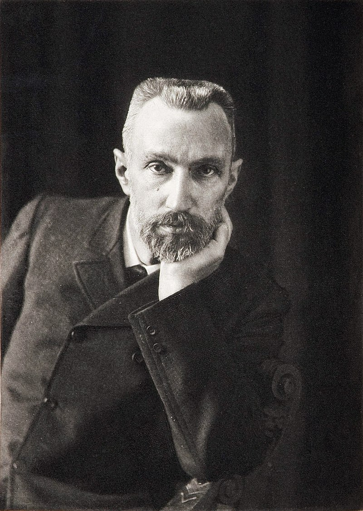
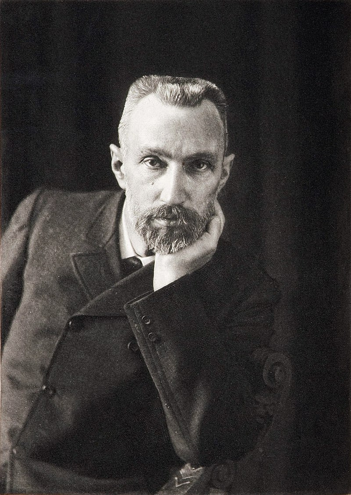

Maria Salomea Skłodowska-Curie (ur. 7 listopada 1867 w Warszawie, zm. 4 lipca 1934 w Passy) – polsko-francuska uczona zajmująca się fizyką doświadczalną i chemią fizyczną, podwójna noblistka – laureatka Nagrody Nobla z fizyki (1903) i chemii (1911). W 1891 Maria Skłodowska wyjechała z Królestwa Polskiego do Paryża, by podjąć studia na Sorbonie (w XIX wieku kobiety nie mogły studiować na ziemiach polskich) następnie rozwinęła tam swoją karierę naukową. Była prekursorką nowej gałęzi chemii – radiochemii. Do jej dokonań należą: rozwinięcie teorii promieniotwórczości, technik rozdzielania izotopów promieniotwórczyc h oraz odkrycie dwóch nowych pierwiastków – radu i polonu. Z jej inicjatywy prowadzono także badania nad leczeniem raka za pomocą promieniotwórczości.
Pierre Curie, pol. Piotr Curie, (ur. 15 maja 1859 w Paryżu, zm. 19 kwietnia 1906 tamże) – francuski fizyk, wykładowca Uniwersytu Paryskiego, laureat Nagrody Nobla w dziedzinie fizyki (1903). Mąż Marii Skłodowskiej-Curie, ojciec Irène Joliot-Curie i Ève Curie.
 
